Sliced Optimal Transport
This tour explore the used of the sliced Wasserstein distance to approximate optimal transport.
Contents
Installing toolboxes and setting up the path.
You need to download the following files: signal toolbox and general toolbox.
You need to unzip these toolboxes in your working directory, so that you have toolbox_signal and toolbox_general in your directory.
For Scilab user: you must replace the Matlab comment '%' by its Scilab counterpart '//'.
Recommandation: You should create a text file named for instance numericaltour.sce (in Scilab) or numericaltour.m (in Matlab) to write all the Scilab/Matlab command you want to execute. Then, simply run exec('numericaltour.sce'); (in Scilab) or numericaltour; (in Matlab) to run the commands.
Execute this line only if you are using Matlab.
getd = @(p)path(p,path); % scilab users must *not* execute this
Then you can add the toolboxes to the path.
getd('toolbox_signal/'); getd('toolbox_general/');
Wasserstein Distance
We consider data \(f \in \RR^{N \times d}\), that corresponds for instance to an image of \(N\) pixels, with \(d=1\) for grayscale image and \(d=3\) for color image. We denote \(f = (f_i)_{i=1}^N\) with \(f_i \in \RR^d\) the elements of the data.
The discrete (empirical) distribution in \(\RR^d\) associated to this data \(f\) is the sum of Diracs \[ \mu_f = \frac{1}{N} \sum_{i=1}^N \de_{f_i}. \]
An optimal assignement between two such vectors \(f,g \in \RR^{N \times d}\) is a permutation \(\si \in \Si_N\) that minimizes \[ \si^\star \in \uargmin{\si \in \Si_N} \sum_{i=1}^N \norm{f_i - g_{\si(i)}}^2. \]
This optimal assignement defines the \(L^2\) Wasserstein distance between the associated point clouds distributions \[ W_2(\mu_f,\mu_g)^2 = \sum_{i=1}^N \norm{f_i - g_{\si(i)}}^2 = \norm{f - g \circ \si}_2^2 \] where \( g \circ \si = (g_{\si(i)})_i \) is the re-ordered points cloud.
1-D Optimal Transport
Unfortunately, computing \(\si^\star\) when \(d>1\) is computationaly more difficult. Best known algorithms (e.g. Hungarian algorithm or linear programming) have a running time of roughly \(O(N^3)\).
For 1-D data, \(d=1\), one can compute explicitely an optimal assignement \(\si^\star \in \Si_N\) for any cost \(C(u,v) = \phi(\abs{u-v})\) where \(\phi : \RR \rightarrow \RR\) is a convex function. This is thus the case for the \(L^p\) optimal transport.
This is obtained by computing two permutations \( \si_f, \si_g \in \Si_N \) that order the values of the data \[ f_{\si_f(1)} \leq f_{\si_f(2)} \leq \ldots f_{\si_f(N)} \] \[ g_{\si_g(1)} \leq g_{\si_g(2)} \leq \ldots g_{\si_g(N)}. \]
An optimal assignement is then optained by assigning, for each \(k\), the index \( i = \si_f(k) \) to the index \( \si^\star(i) = \si_g(k) \), i.e. \[ \si^\star = \si_g \circ \si_f^{-1}\] where \( \si_f^{-1} \) is the inverse permutation, that satisfies \[ \si_f^{-1} \circ \si_f = \text{Id} \].
Wasserstein Projection
Given two point clouds \(f,g \in \RR^{N \times d}\), we define \( \Pi_g(f) \) as the orthogonal projection of \(f\) on the set \[ \Hh_g = \enscond{m \in \RR^N}{ \mu_m = \mu_g }. \] This projection is actually equal to \[ \Pi_g(f) = g \circ \si^\star = (g_{\si^\star(i)})_{i=1}^N, \] where \(\si^\star\) is the optimal assignement beteen \(f\) and \(g\).
For 1-D point clouds (\(d=1\)), since computing \(\si^\star\) is easy, one can compute easily this projection.
We define the operator \(P(f,g)\) such that for for 1-D point clouds, \(f,g \in \RR^N\) \(P(f,g) = \Pi_g(f)\) is the orthogonal projection of \(f\) onto the histogram constraints \(\Hh_g\).
options.rows=1; P = @(f,g)perform_hist_eq(f,g,options);
This operator operates over 1-D distributions, and is extended to higher dimensions by applying 1-D projection independently along each dimension. Important: note that when \(d>1\), one does not have in general \(P(f,g) = \Pi_g(f)\).
Sliced Wasserstein Distance
To obtain approximated assignements for large scale imaging problems, we introduce the following sliced approximation \[ SW_2(\mu_f,\mu_g)^2 = \int_{\mathbb{S}^{d-1}} W_2( \mu_{f_\th}, \mu_{g_\th} )^2 \, d \th\] which integrate on the \(d\)-dimensional sphere \[ \mathbb{S}^{d-1} = \enscond{\th \in \RR^d}{ \norm{\th}=1 } \] the 1-D Wasserstein distance \(W_2( \mu_{f_\th}, \mu_{g_\th} )\) between 1-D projected point clouds \[ f_\th = ( \dotp{f_i}{\th} )_{i=1}^N \in \RR^N. \]
Following an idea initially proposed by Marc Bernot, this sliced distance is introduced in:
J. Rabin, G. Peyre, J. Delon, M. Bernot, Wassertein Barycenter and its Applications to Texture Mixing Proc. SSVM'11, Springer, LNCS vol. 6667, pp. 435-446, 2011.
Sliced Wasserstein Projection
We would like to compute the orthogonal projection \(\tilde f = \Pi_g(f)\) on the statistical constraint \(\Hh_g\). This is computationally intractable for large scala datasets, since it requires to compute the optimal assignement \(\si^\star\) between \(f\) and \(g\).
We approximate \(\tilde f\) by computing a new dataset that is both a local minimizer of the sliced Wasserstein distance to \(\mu_g\) \[ E(m) = W_2(\mu_m,\mu_g) \] and that is close to \(f\).
One can show that \(E\) is a \(C^1\) functional. In order to obtain a cloud that is close to \(f\), we start a gradient descent of \(E\) starting from \(f\) \[ f^{(0)}=f \qandq f^{(\ell+1)} = f^{(\ell)} - \tau_\ell \nabla E(f^{(\ell)})\] for some step size \(\tau_\ell>0\).
This gradient descent is still untractable to compute because computing \(\nabla E\) requires an integration on the whole sphere \(\mathbb{S}^{d-1}\). We thus use instead a stochastic gradient descent method. At each iteration, we compute at random an orthogonal basis \( \Theta = (\th_1,\ldots,\th_\ell) \) of \(\RR^d\). We update the current iterates by minimzing a partial sliced distance \[ f^{(\ell+1)} = f^{(\ell)} - \tau_\ell \nabla E_\Theta(f^{(\ell)}) \] where the integral in the definition of the distance is replaced by a discrete sum \[ E_\Theta(m) = \sum_{k=1}^d W_2( \mu_{m_{\th_k}}, \mu_{g_{\th_k}} )^2. \]
One can show that computing this stochastic gradient step is equivalent to computing \[ f^{(\ell+1)} = (1-\tau_\ell) f^{(\ell)} + \tau_\ell \tilde f^{(\ell)} \] where \(\tilde f^{(\ell)}\) is obtained by equalizing independantly each coordinate of \(f^{(\ell)}\) and \(g\) in the orthobasis \(\Theta\). This corresponds to use the coordinate-wise projector \(P\) \[ \tilde f^{(\ell)} = \Theta P( \Theta^* f^{(\ell)}, \Theta^* g ) \] where \(\Theta^*\) is the transpose operator, i.e. \( \Theta^*(u) = (\dotp{u}{\theta_k})_{k=1}^d \)
We show numerically that this gradient descent scheme converges to a point that is within the statistical constraint, i.e. \[ f^{(\ell)} \overset{\ell \rightarrow +\infty}{\longrightarrow} \tilde f \qwhereq \mu_{\tilde f} = \mu_g. \] This means that at convergence, one obtains an assignement between \(f\) and \(g\), i.e. \(\tilde f = g \circ \si\) for some \(\si\). It is important to note that in general, this \(\si\) is not the optimal assignement \(\si^\star\), although we oberse numerically that it is close to be optimal for many large scale imaging problems.
Matching of 2-D Distributions
We apply this stochastic gradient descent to perform the matching of a pair of 2-D distributions, hence \(d=2\).
Number of points.
N = 300;
Dimension of the clouds.
d = 2;
First distribution of points, inside a square.
f = rand(2,N)-.5;
Second distribution of points, inside an anulus.
theta = 2*pi*rand(1,N); r = .8 + .2*rand(1,N); g = [cos(theta).*r; sin(theta).*r];
Shortcut for displaying point clouds.
plotp = @(x,col)plot(x(1,:)', x(2,:)', 'o', 'MarkerSize', 10, 'MarkerEdgeColor', 'k', 'MarkerFaceColor', col, 'LineWidth', 2);
Display.
clf; hold on; plotp(f, 'b'); plotp(g, 'r'); axis('off'); axis('equal');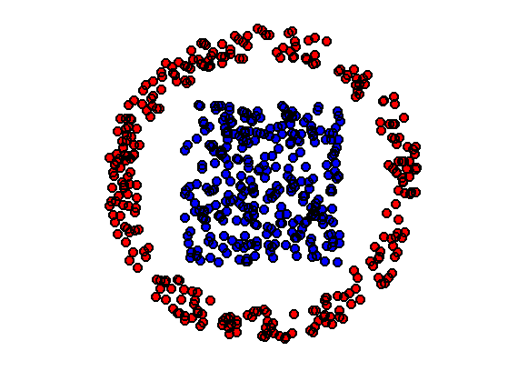
We use a fixed gradient step size \(\tau_\ell=\tau\). While stochastic gradient descent require in theory a decaying step size, it appears numerically that a fixed step size works well to minimize SW.
tau = .2;
Intialize \(f^{(0)}=f\).
f1 = f;
Compute an orthogonal coordinate system for this iteration.
[Theta,~] = qr(randn(d));
Perform the gradient step update.
f1 = (1-tau)*f1 + tau * Theta * P(Theta'*f1, Theta'*g);
Display \(f\) and \(g\), together with the position \(f^{(1)}\) at the first iteration (in yellow).
clf; hold on; plotp(f, 'b'); plotp(g, 'r'); plotp(f1, 'y'); axis('off'); axis('equal');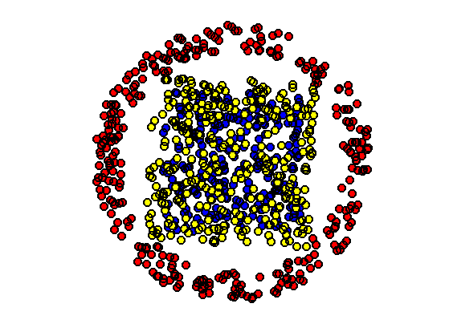
Exercice 1: (check the solution) Iterate many time the randomized assignement until convergence of \(\tilde f\). The random projector \(\Theta\) should be re-computed at each iteration.
exo1;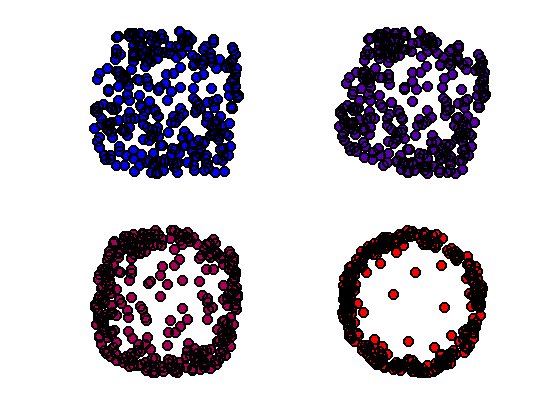
Display final configuration with the matching.
clf; hold on; h = plot([f(1,:);f1(1,:)], [f(2,:);f1(2,:)], 'k'); set(h, 'LineWidth', 2); plotp(f, 'b'); plotp(g, 'r'); axis('off'); axis('equal');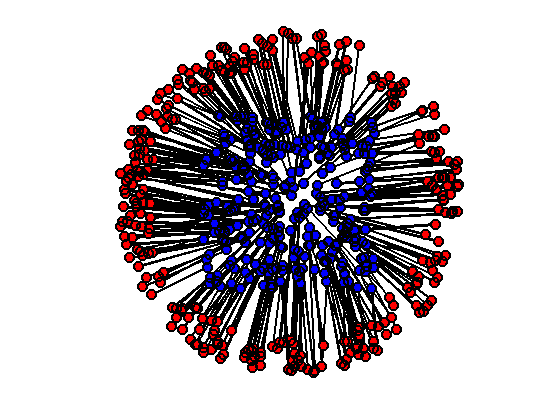
An average point cloud is obtained by interpolation \[\forall t \in [0,1], \quad f_t = (1-t) f + t \tilde f. \]
t = .5; ft = (1-t)*f + t*f1;
Display the barycenter in magenta for \(t=1/2\) (midway point cloud).
clf; hold on; plotp(f, 'b'); plotp(g, 'r'); plotp(ft, [t 0 1-t]); axis('off'); axis('equal');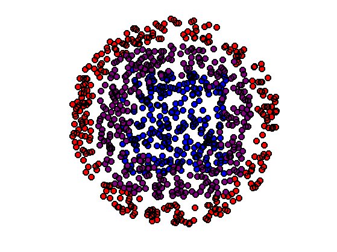
Exercice 2: (check the solution) Show the progressive interpolation for varying \(t \in [0,1]\).
exo2;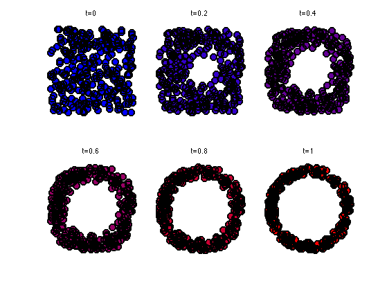
3D Histogram Matching
We now use this method to perform the equalization of color images, hence \(d=3\).
Width \(n\) of the images and number of pixels \(N=n \times n\).
n = 128; N = n*n; d = 3;
Load two color images \(F, G \in \RR^{n \times n \times 3}\).
F = rescale( load_image('hibiscus', n) ); G = rescale( load_image('flowers', n) );
Display them.
clf;
imageplot({F G});
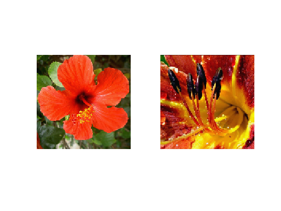 The 3-D points clouds \(f,g \in \RR^{N \times 3}\) associated with the images.
f = reshape(F, [n*n 3])'; g = reshape(G, [n*n 3])';
Shortcut to compute 2-D histograms.
quantize = @(A,Q)1+round((Q-1)*A); J = @(I,Q)I(1,:)' + Q*(I(2,:)'-1); hist2d = @(f,Q)reshape( accumarray(J(quantize(f,Q),Q), ones(1,N), [Q*Q 1], @sum), [Q Q]);
Number of bins for the display of histograms.
Q = 60;
Display the 2-D histograms of the red/green channels of both images (use log to boost contrast).
func = @(a)log(a+3);
clf;
imageplot({ func(hist2d(f(1:2,:),Q)), func(hist2d(g(1:2,:),Q)) });
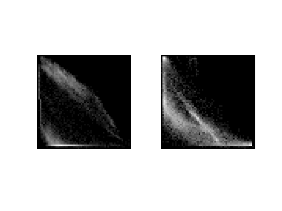 Exercice 3: (check the solution) Perform the equalization of each of the coordinate independantly of \(f\) with \(g\). Display the resulting image.
exo3;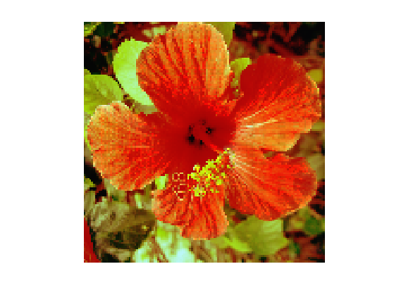
Equalizing channel by channel does not leads to an image whose distribution is equal to the target distribution (only the projection on the three axes are equal).
Exercice 4: (check the solution) To obtain an exact matching, one can use the stochastic gradient descent algorithm to minimize \(SW\). Display the resulting image at several stages of the optimization process.
exo4;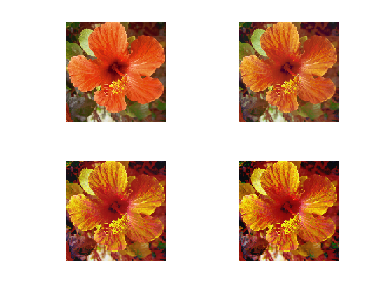
Display the final image.
clf; imageplot(F1);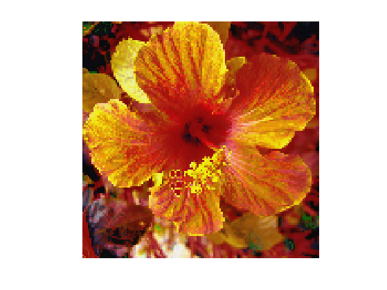
Exercice 5: (check the solution) Display the geodesic interpolation between the two histograms \(\mu_f\) and \(\mu_g\).
exo5;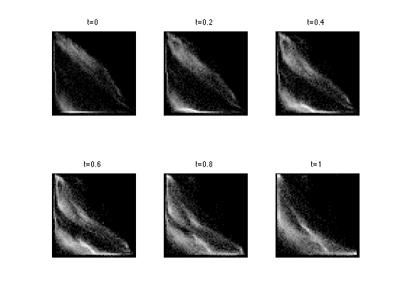